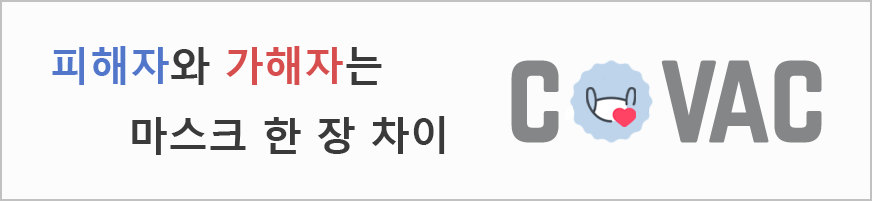

후원 정보
이 사이트는 별도의 수익 없이 운영 되는 사이트입니다.
개발자를 위한 후원은 아래를 참조해 주세요.
계좌번호 : 카카오 123-123-123
다른 문의는 문의 및 제보를 이용해 주세요.

이 사이트는 별도의 수익 없이 운영 되는 사이트입니다.
개발자를 위한 후원은 아래를 참조해 주세요.
계좌번호 : 카카오 123-123-123
다른 문의는 문의 및 제보를 이용해 주세요.